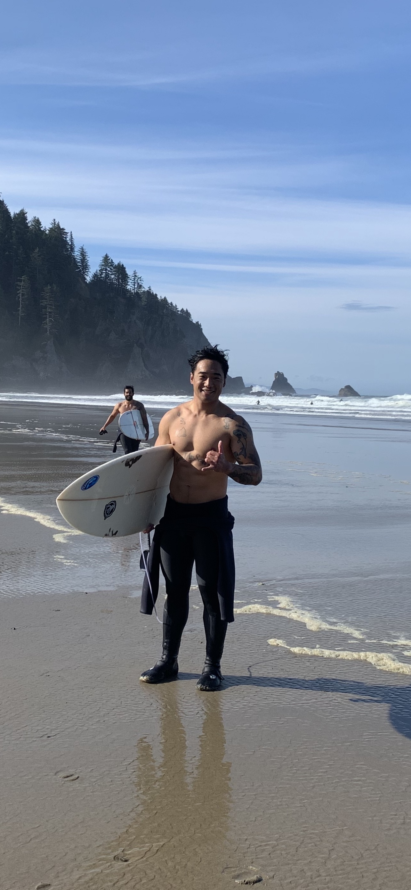
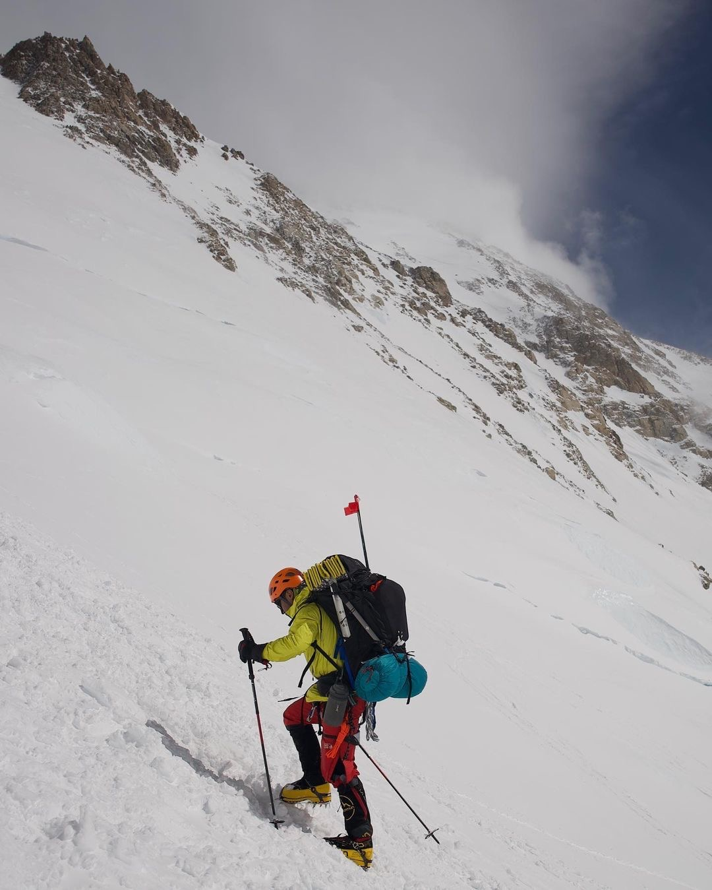

<div class="textcontainer">
<h3>About Me</h3>
<p class="margin"> </p>
<div class="center-row">
<img style = "width: 33vw;"src="./About me pic.jpg" alt="placeholder for you about me image">
<p id="aboutme">
I am originally from Hilo, Hawaii. I was in the army for 10 years, spending most of my career in special operations as an Army Ranger. During my career I began to specialize in tactical robotic integration, meaning that I began to build and utilize existing tech and integrating it into the battlefield to support our missions. While doing this I was exposed to fabrication techniques which sparked my initial intrest in this subject.
</p>
</div>
<br></br>
In my freetime I like to pursue adventure activites like surfing
<br></br>

<br></br>
Mountaineering
<br></br>

<br></br>
And Snowboarding
<br></br>
<video width="640" height="480" controls>
<source src="IMG_1380.MOV" type="video/mp4">
</video>
</div>